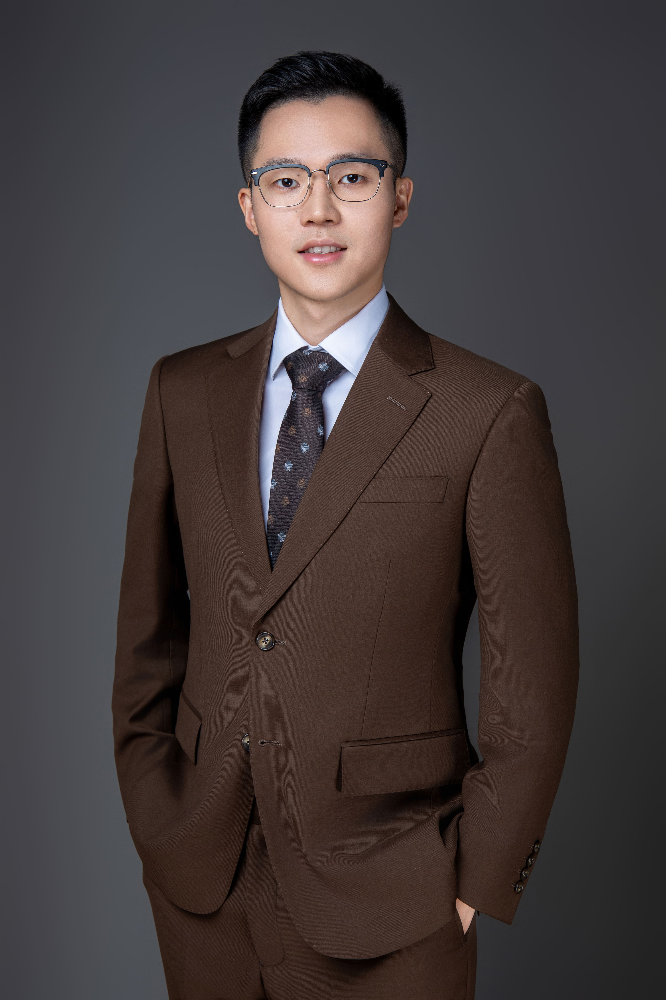

|
Qunliang Xing
中文
/ Google Scholar
/ GitHub
/ LinkedIn
/ Email
Qunliang Xing received his Ph.D. in Engineering from Beihang University in 2025, where he was advised by Professor Mai Xu. He also completed a university-level honors program during his Ph.D. studies. He previously received his BEng from Beihang University in 2019 and completed the undergraduate honors program.
His research interests include Computer Vision and Multimedia. He has published several papers in top journals and conferences such as IEEE TPAMI and CVPR, including highly cited papers recognized by the Essential Science Indicators (ESI). His publications have received over 600 citations. He has won two NTIRE championships. His open-source projects have garnered more than 800 stars. He was selected for the Tencent Rhino-bird Open-source Training Program and recognized as an OpenMMLab Active Contributor. He serves as a reviewer for CVPR, TIP, and other venues.
Outside academia, he also excels in sports, having placed second in the Beihang 100m final and led the school soccer team to two championship titles as captain.
|

|
Education
-
Ph.D. in Engineering (2019.9–2025.6)
Advised by Changjiang Distinguished Professor Mai Xu
School of Electronic Information Engineering, Beihang University
Completed the Ph.D. honors program under Shen-Yuan Honors College
-
B.S. in Engineering (2015.9–2019.6)
School of Electronic Information Engineering, Beihang University
Completed the undergraduate honors program under Shen-Yuan Honors College
-
High School (2012.9–2015.6)
Shenzhen Nanshan Foreign Language School
Admitted to Beihang University as the top scorer in Guangdong Province, China
|
Work Experience
-
Reviewer (Year of First Review)
- IEEE TIP (2021), IEEE TMM (2021), IEEE TCSVT (2022), IEEE/CAA JAS (2022), ACM CSUR (2025)
- IEEE ICME (2021), IEEE/CVF CVPR (2024), AAAI (2025), IEEE/CVF ICCV (2025)
-
Research Intern
- Video Quality Enhancement @ Tao Technology, Alibaba Group (2021.12–2023.12)
🏆 Winner of the CVPR NTIRE challenge
- Tencent Rhino-bird Open-source Training Program @ Tencent (2021.7–2021.9)
Selected as one of the 127 participants from over 1,800 applicants
- Video Quality Enhancement for HW.265 Codec @ 2012 Lab, Huawei (2018.12–2019.12)
-
Student Works
- Mentor of Undergraduates @ Shen-Yuan Honors College, Beihang University (2020.10–2021.10)
Selected as an excellent mentor (Top 25%)
- Teaching Assistant for “Introduction to Machine Learning” @ Beihang University (2020.9–2021.1)
|
Selected Publications
Co-first† Corresponding‡
-
MarsSQE: Stereo quality enhancement for Martian images using bi-level cross-view attention
M. Xu, Y. Zhu, Q. Xing‡, J. Yang, X. Zou
arXiv 2024
-
MarsQE: Semantic-informed quality enhancement for compressed Martian image
C. Liu, M. Xu, Q. Xing, X. Zou
arXiv 2024
-
Enhancing quality of compressed images by mitigating enhancement bias towards compression domain
Q. Xing, M. Xu, S. Li, X. Deng, M. Zheng, H. Liu, Y. Chen
IEEE/CVF CVPR 2024
-
DAQE: Enhancing the quality of compressed images by exploiting the inherent characteristic of defocus
Q. Xing, M. Xu, X. Deng, Y. Guo
IEEE TPAMI 2023
-
Progressive training of a two-stage framework for video restoration
Q. Xing†, M. Zheng†, M. Qiao†, M. Xu, L. Jiang, H. Liu, Y. Chen
NTIRE with IEEE/CVF CVPR 2022
🏆 Winning method in the NTIRE challenge
-
DeepQTMT: A deep learning approach for fast QTMT-based CU partition of intra-mode VVC
T. Li, M. Xu, R. Tang, Y. Chen, Q. Xing
IEEE TIP 2021
-
Early exit or not: Resource-efficient blind quality enhancement for compressed images
Q. Xing, M. Xu, T. Li, Z. Guan
ECCV 2020
-
MFQE 2.0: A new approach for multi-frame quality enhancement on compressed video
Q. Xing, Z. Guan, M. Xu, R. Yang, T. Liu, Z. Wang
IEEE TPAMI 2019
🏆 Top 1% highly cited paper recognized by the Essential Science Indicators (ESI)
|
Intellectual Properties
-
National Invention Patent
-
Software Copyright
-
2020SR0404831: Resource-efficient quality enhancement system for HEVC based on early-exit mechanism V1.0
-
2020SR0472737: Multi-frame video quality enhancement system V2.0
|
Honors and Awards
- Outstanding Graduate of Beijing, 2025
Ranked top 5% among all graduates; one of only two recipients selected from the school
- Beihang Shen-Yuan Medal, 2024
🏆 Highest student award at Beihang University; Awarded annually to 10 Ph.D. students
- China National Scholarship, 2023
- Beihang Academic Excellence Fund for Ph.D. Candidates, 2023
Ranked 1st out of 96 in the college
Completed in 2024
- Scientific Research Role Model, Shen-Yuan Honors College, Beihang University, 2023
Ranked 1st out of 33 in the college
- Glarun Scholarship by the 14th Research Institute, CETC, 2022
Among four awardees from 96 college students
- Beihang Excellent Graduate, 2019
Top 20% in the university
- Beihang Outstanding/Merit Student, 2015/2018/2021/2022
Top 5% in the university
- Shenzhen Merit Student, 2014
🏆 Sole awardee in the school
- Winner of the CVPR NTIRE challenge on Super-Resolution and Quality Enhancement of Compressed Video, 2022
- OpenMMLab Active Contributor, 2022
- Beihang Soccer Super Cup champion (as the starting center-back), 2023
- Runner-up in the 100m final at the Beihang Sports Day, 2022
- Soccer Championship at the Beihang Sports Festival (as the starting center-back), 2017
|
|
Thanks to Jon Barron for sharing the source code of his site
|
|
{kind=link}